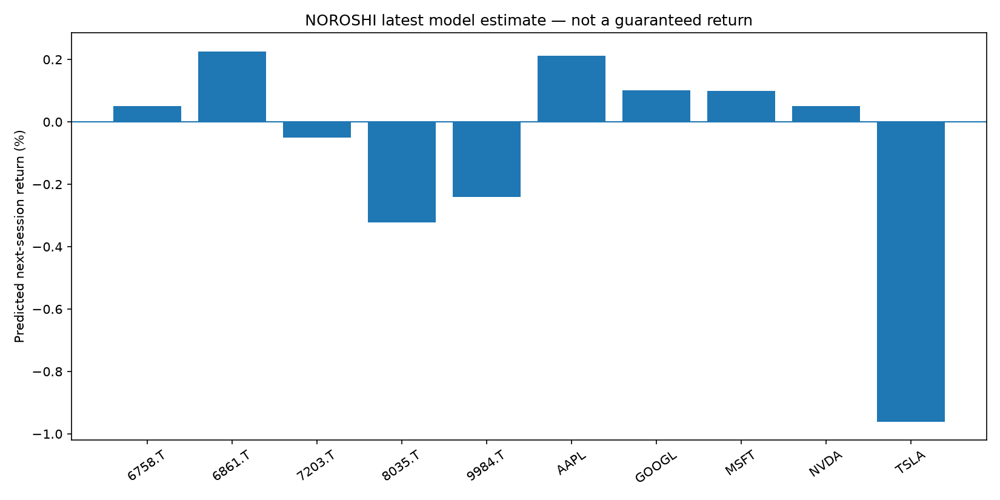
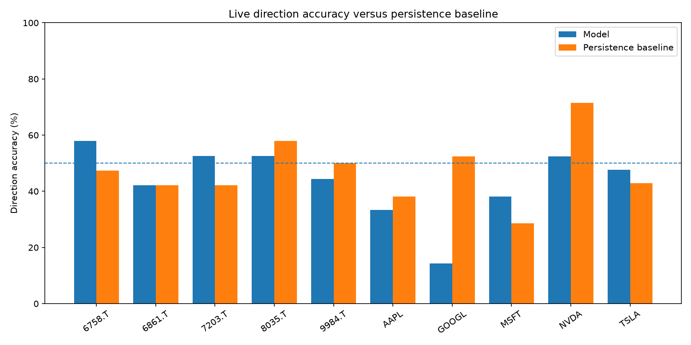

NOROSHI Auditable Forecast Dashboard
次営業日終値方向の研究用予測。売買の自動執行や利益保証は行いません。
システム状態
正常
生成日時 UTC
2026-10-08T16:26:07.630647Z
市場データ基準日
2026-10-07 / 2026-10-08
有効予測
10
Walk-forward方向精度
50.0%
baseline 50.1%直近90日Live方向精度
44.5%
229件 / baseline 48.0%状態と注意
- 現在、重大な警告はありません。
Confidenceは過去の的中率ではありません。 今回の判定に対するモデルのクラス確率です。実際の精度はWalk-forward検証と、保存後に確定したLive実績で別に測定します。
30件未満のLive評価は暫定値であり、対外的な精度主張には使いません。
最新予測
| 銘柄 | 基準日 | 終値 | 予測値 | 予測騰落 | 方向 | 上昇確率 | Confidence | 時系列検証 | 品質 | 研究Signal |
|---|---|---|---|---|---|---|---|---|---|---|
| 6758.T ソニーグループ | 2026-10-08 | ¥3,695 | ¥3,701 | +0.17% | 強気 | 62.8% | 62.8% モデル確率 | 51.0% baseline 54.0% | CAUTION | HOLD |
| 6861.T キーエンス | 2026-10-08 | ¥79,830 | ¥79,977 | +0.18% | 強気 | 54.9% | 54.9% モデル確率 | 47.0% baseline 48.5% | CAUTION | HOLD |
| 7203.T トヨタ自動車 | 2026-10-08 | ¥2,916 | ¥2,910 | -0.22% | 弱気 | 39.2% | 60.8% モデル確率 | 49.0% baseline 52.0% | CAUTION | HOLD |
| 8035.T 東京エレクトロン | 2026-10-08 | ¥12,235 | ¥12,153 | -0.67% | 弱気 | 30.9% | 69.1% モデル確率 | 49.5% baseline 48.0% | CAUTION | HOLD |
| 9984.T ソフトバンクグループ | 2026-10-08 | ¥6,058 | ¥6,032 | -0.44% | 弱気 | 43.9% | 56.1% モデル確率 | 49.5% baseline 48.0% | CAUTION | HOLD |
| AAPL Apple | 2026-10-07 | $336.67 | $336.43 | -0.07% | 弱気 | 50.0% | 50.0% モデル確率 | 55.0% baseline 46.0% | PASS | HOLD |
| GOOGL Alphabet | 2026-10-07 | $350.50 | $350.25 | -0.07% | 弱気 | 46.9% | 53.1% モデル確率 | 50.5% baseline 50.0% | PASS | HOLD |
| MSFT Microsoft | 2026-10-07 | $529.76 | $530.35 | +0.11% | 強気 | 57.6% | 57.6% モデル確率 | 46.5% baseline 51.0% | CAUTION | HOLD |
| NVDA NVIDIA | 2026-10-07 | $237.47 | $236.16 | -0.55% | 弱気 | 31.4% | 68.6% モデル確率 | 51.5% baseline 53.5% | CAUTION | HOLD |
| TSLA Tesla | 2026-10-07 | $377.81 | $375.74 | -0.55% | 弱気 | 36.9% | 63.1% モデル確率 | 51.0% baseline 50.5% | PASS | SELL |
予測チャート

精度とbaseline

Live実績（銘柄別）
| 銘柄 | 確定件数 | 方向精度 | baseline | 差 | Return MAE |
|---|---|---|---|---|---|
| 6758.T | 22 | 54.5% | 45.5% | +9.1pt | 1.17% |
| 6861.T | 22 | 36.4% | 40.9% | -4.5pt | 1.08% |
| 7203.T | 22 | 59.1% | 40.9% | +18.2pt | 1.10% |
| 8035.T | 22 | 54.5% | 59.1% | -4.5pt | 6.15% |
| 9984.T | 21 | 47.6% | 42.9% | +4.8pt | 4.46% |
| AAPL | 24 | 37.5% | 37.5% | +0.0pt | 1.08% |
| GOOGL | 24 | 25.0% | 58.3% | -33.3pt | 1.31% |
| MSFT | 24 | 33.3% | 37.5% | -4.2pt | 1.21% |
| NVDA | 24 | 50.0% | 70.8% | -20.8pt | 1.18% |
| TSLA | 24 | 50.0% | 45.8% | +4.2pt | 1.84% |
データ鮮度
| Ticker | 市場 | 最終日 | 取得元 | 状態 | 経過日 | エラー |
|---|---|---|---|---|---|---|
| AAPL | US | 2026-10-07 | download | fresh | 1 | |
| GOOGL | US | 2026-10-07 | download | fresh | 1 | |
| MSFT | US | 2026-10-07 | download | fresh | 1 | |
| NVDA | US | 2026-10-07 | download | fresh | 1 | |
| TSLA | US | 2026-10-07 | download | fresh | 1 | |
| 7203.T | JP | 2026-10-08 | download | fresh | 1 | |
| 6758.T | JP | 2026-10-08 | download | fresh | 1 | |
| 9984.T | JP | 2026-10-08 | download | fresh | 1 | |
| 6861.T | JP | 2026-10-08 | download | fresh | 1 | |
| 8035.T | JP | 2026-10-08 | download | fresh | 1 |
評価方法
毎回、最新OHLCVを取得し、未完了セッションを除外してからLightGBM分類器・回帰器を再学習します。モデル内部評価には、未来データを訓練側へ混ぜないexpanding TimeSeriesSplitと1期間のgapを使います。
実運用評価は、変更不能なschema-v2予測を次の完成した市場セッションの終値と後日照合します。2025年11月で停止していた旧キャッシュ由来の予測は集計しません。
機械可読データ: latest_predictions.json / metrics.json / status.json / live_results.json